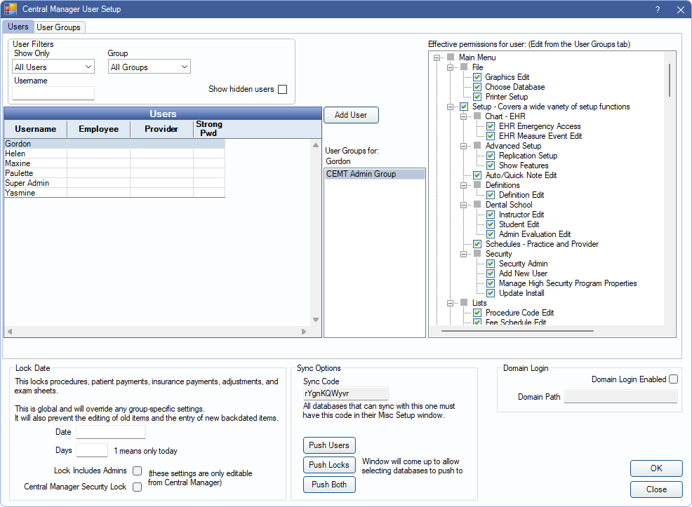
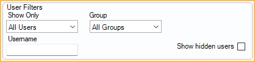

CEMT Security
CEMT security settings control the security settings for database connections.
In the Central Enterprise Management Tool ( CEMT ), click Setup, Security.
Set up users, assign users to groups, assign permissions to user groups, and enter a lock date for procedures, payments, adjustments, and exam sheets.
- CEMT users are different from regular Open Dental users. CEMT users are created from within the CEMT tool and can access all connected databases using their CEMT credentials.
- A CEMT user's Open Dental permissions are based on their CEMT permissions and can only be set from within the CEMT, not within the database connection.
- For a CEMT user to show on a connected database at log in, the user must be associated with a user group that was manually created from the CEMT tool. CEMT users in the default user groups are not pushed to the database.
- Because the Central Manager database (dbcentral) contains information about multiple connections, including encrypted passwords, we advise placing extra security around the MySQL installation. Edit the MySQL service and change the login information from local system to a specific user. The database files can then be encrypted by Windows while still allowing the MySQL service to run when the proper Windows user is logged in. See MySQL Security.
Users Tab
CEMT users have access to all connected databases. They are created in the CEMT tool and are able to log into a database by using their set credentials.
User Filters: Adjust filters to show only users matching the criteria in the Users list below.
- Show Only: Select an option from the dropdown to only show certain users.
- All Users: Select to show all users regardless of employee/provider association.
- Providers: Select to only show users associated to a provider.
- Employees: Select to only show users associated to an employee.
- Other: Select to only show users with no employee or provider association.
- Group: Select the user group to filter by. Select All Groups to include users regardless of user group.
- Username: Type a username to search for specific users.
- Show hidden users: Check to include users marked hidden.
Users: A list of all users that meet the User Filter criteria. Double-click to edit a user (see User Edit section below).
Add User: Create a new user. See User Edit section below
User Groups for: Displays users groups associated with the selected user.
Effective permissions for user: A read-only list of the user group's assigned permissions (Checked = allowed, Unchecked = not allowed). To change a user group's assigned permissions, click the User Groups tab.
User Edit
In the Users tab, click Add User to create a new CEMT user or, double-click an existing user to edit.

Is Hidden: Check to hide this user. Users cannot be deleted.
User Tab: Set up general user information from this tab.
- Enter the username in the top-left text field.
- The CEMT username must be unique and different from the names of regular users so that when CEMT users are pushed to a database, it does not cause confusion.
- Domain User: Click [...] to assign a domain login to the user.
- Highlight the User Groups to assign from the list on the left.
- User permissions are determined by User Groups and displayed on the right for easy reference.
Alert Subs Tab: Highlight alert types to subscribe the user to Alerts.

Create Password / Change Password: Update or set the user's password.
- For security purposes, each user should have a secure password.
- The password is contained in dbcentral as a hash. This means there is no way to decrypt the password by looking in the database, and there is no way to recover a lost password other than deleting it from the database directly.
- Users can also change their own passwords while logged on. See CEMT Passwords, Changing Passwords for the Logged On User.
Unlock Account: Click to manually unlock a user's account if they have been locked out. Users are temporarily locked out after more than five consecutive failed attempts to log on to CEMT. Accounts are also automatically unlocked after five minutes.
User Groups Tab
Users are placed into a User Group then each User Group is granted a set of Permissions. Edit permissions from the User Group tab.

See User Group for instructions on setting permissions and additional information.
CEMT users are required to have the Setup permission when attempting to set up connections, set up groups, set up reports, add a new connection, or edit an existing connection.
To run CEMT reports, users must have the Reports permission and the Production and Income - View All Providers permission.
Lock Dates
Security Lock Dates prevent users from editing of procedures, patient payments, insurance payments, adjustments, and exam sheets after a certain date. They also prevent backdating of new items. Lock information by a specific date, or in a certain amount of days:

- Date: Enter a specific date (e.g., 12/31/2023) to lock this data and prior dates.
- Days: Enter a number to lock items after a set number of days. Changes are allowed only before the set numbers of days
See Permissions to find which permissions are affected by lock dates and which date is used to determine if an item is locked.
Other options:
- Lock includes Admins: Check this box to apply the lock date limitation to users in the Admin user group.
- Central Manager Security Lock: Check this box to block users from entering Global Lock Dates on local databases.
Lock dates set in the CEMT tool can be applied to database connections, thus overwriting any local Global Lock Dates. See Sync Options below.
Sync Options
Syncing security settings apply the settings to database connections.

Sync Code: Unique code for this CEMT database only. All database connections which can be synced to the CEMT database have this same code. The code matches the Sync code for CEMT shown in Preferences .
There are three sync options:
- Push Users: Pushes users, user groups, alert subscriptions, and permissions from CEMT to each database. Once pushed, users are viewed in the CEMT User Edit window in Security.
- Push Locks: Pushes lock dates. This overrides any local Global Lock Dates.
- Push Both: Pushes both user info and lock dates.
When a sync option is selected, a list of database connections are shown.

Select the database connections to sync security settings with, then click OK to sync.
Domain Login
Allow users to login automatically via their Windows domain user. See Single Sign-On / Domain Login for details.